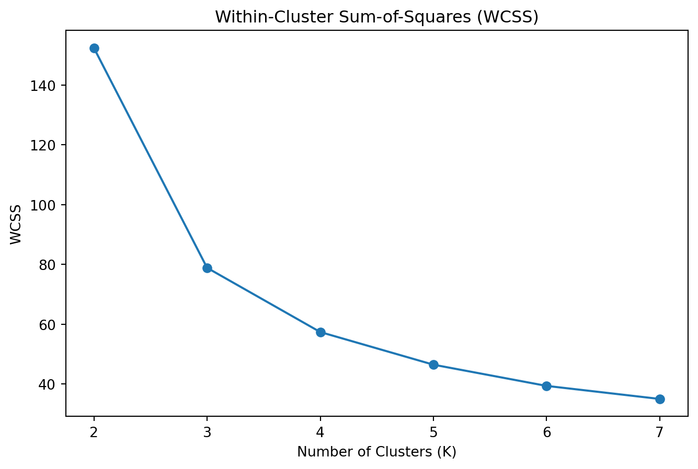

todo: write your own code to implement the k-means algorithm. Make plots of the various steps the algorithm takes so you can “see” the algorithm working. Test your algorithm on either the Iris or PalmerPenguins datasets. Compare your results to the built-in kmeans function in R or Python.
todo: Calculate both the within-cluster-sum-of-squares and silhouette scores (you can use built-in functions to do so) and plot the results for various numbers of clusters (ie, K=2,3,…,7). How many clusters are suggested by these two metrics?
Load the Dataset
First, I loaded the Iris dataset using the pandas library. The Iris dataset contains measurements of sepal length, sepal width, petal length, and petal width for three species of iris flowers. Loading the dataset allowed me to familiarize myself with the structure and contents of the data.
import pandas as pd# Load the Iris datasetiris_df = pd.read_csv('iris.csv')print("Iris Dataset:")print(iris_df.head())
To start the K-means clustering process, I needed to initialize the centroids randomly. Centroids are the center points of the clusters. I defined a function initialize_centroids that selects k random points from the dataset as the initial centroids. This randomness helps in ensuring that the centroids are spread out and can capture different parts of the data distribution.
# Initialize centroids for K=3k =3initial_centroids = initialize_centroids(iris_data, k)print("Initial Centroids:")print(initial_centroids)
This step involved choosing three (since k=3) random data points to serve as the initial cluster centers. Setting a seed value ensured that the results were reproducible.
Assign Clusters
Next, I needed to assign each data point to the nearest centroid. This step is crucial because it determines the initial grouping of data points. To do this, I calculated the Euclidean distance between each data point and each centroid, then assigned each point to the centroid it was closest to.
# Assign clusters based on initial centroidsinitial_clusters = assign_clusters(iris_array, initial_centroids)print("Initial Cluster Assignments:")print(initial_clusters)
This assignment created an initial clustering of the data points, where each point was labeled according to the closest centroid.
Update Centroids
After the initial assignment of clusters, I needed to update the centroids. The new centroid for each cluster is calculated as the mean of all data points assigned to that cluster. This step helps in refining the position of the centroids to better represent the data points in their respective clusters.
# Update centroids based on initial cluster assignmentsnew_centroids = update_centroids(iris_array, initial_clusters, k)print("Updated Centroids:")print(new_centroids)
By recalculating the centroids, the clusters become more accurate, as the centroids now reflect the mean position of all points in each cluster.
Implement K-means Algorithm
To automate the process of updating centroids and reassigning clusters, I combined the initialization, assignment, and update steps into a single function called kmeans. This function iterates until the centroids no longer change significantly, indicating convergence.
# Run K-means algorithm for K=3k =3final_clusters, final_centroids = kmeans(iris_array, k)print("Final Cluster Assignments:")print(final_clusters)print("Final Centroids:")print(final_centroids)
This step ensured that the K-means algorithm could automatically refine the clusters through repeated assignments and updates, stopping once the centroids stabilized.
Calculate WCSS for Different K Values
To evaluate the performance of the clustering, I calculated the within-cluster sum-of-squares (WCSS) for different values of K. WCSS measures the total variance within each cluster, and it’s used to determine the optimal number of clusters.
Calculating WCSS for multiple values of K helped me identify the “elbow point” in the plot, which suggests the optimal number of clusters.
Plot WCSS Values
Plotting the WCSS values for different K values allowed me to visually inspect where the “elbow” point is, which indicates the optimal number of clusters.
import matplotlib.pyplot as plt# Plot WCSS valuesplt.figure(figsize=(8, 5))plt.plot(range(2, 8), wcss_values, marker='o')plt.title('Within-Cluster Sum-of-Squares (WCSS)')plt.xlabel('Number of Clusters (K)')plt.ylabel('WCSS')plt.show()

The plot showed a noticeable decrease in WCSS up to K=3, after which the rate of decrease slowed down, suggesting K=3 as the optimal number of clusters.
Calculate Silhouette Scores for Different K Values
In addition to WCSS, I calculated silhouette scores for different K values. The silhouette score measures how similar a data point is to its own cluster compared to other clusters, providing a measure of cluster cohesion and separation.
from sklearn.metrics import silhouette_score# Calculate silhouette scores for K=2 to K=7silhouette_scores = []for k inrange(2, 8): clusters, centroids = kmeans(iris_array, k) silhouette_avg = silhouette_score(iris_array, clusters) silhouette_scores.append(silhouette_avg)
Based on the WCSS and silhouette score plots, I concluded that K=3 was the optimal number of clusters for the Iris dataset. The WCSS plot showed a clear “elbow” at K=3, while the silhouette scores were highest for K=2 and K=3. This comprehensive analysis allowed me to successfully implement the K-means clustering algorithm and determine the optimal number of clusters for the given dataset.
Latent-Class MNL
todo: Use the Yogurt dataset from HW3 to estimate a latent-class MNL model. This model was formally introduced in the paper by Kamakura & Russell (1989), which you may want to read or reference. Compare the results to the standard (aggregate) MNL model from HW3. What are the differences in the parameter estimates?
todo: Fit the latent-class MNL model with 2, 3, …, K classes. How many classes are suggested by the BIC? The Bayesian-Schwarz Information Criterion link is a metric that assess the benefit of a better log likelihood at the expense of additional parameters to estimate – akin to the adjusted R-squared for the linear regression model. Note, however, that a lower BIC indicates a better model fit, accounting for the number of parameters in the model.